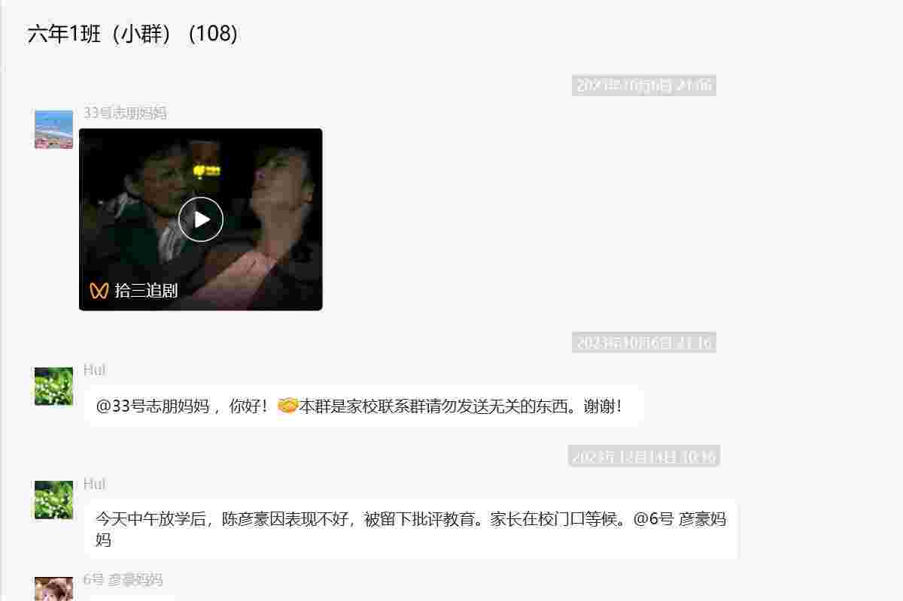
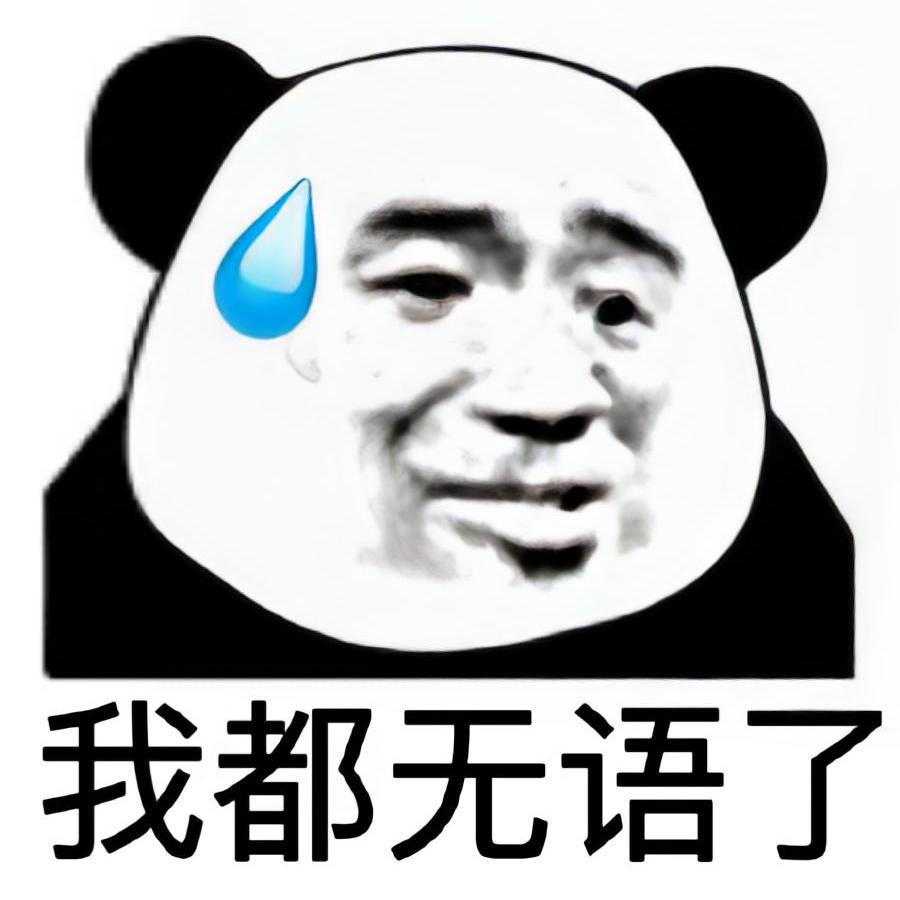
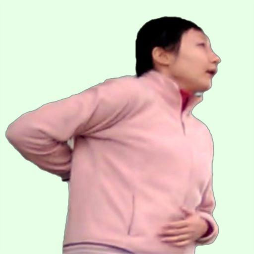

为什么英语课从原来备受大家讨厌变成了“最喜欢的课”？为什么大家现在“只想上英语课”？
原来，大家起先对ET的批评非常反感，后来想通了，把ET的批评当成了一种享受、一种娱乐方式，而ET也在这种环境下加重了惩罚措施，瓜就更多了。
ET的课件一般都是自制的，而且特垃圾。像图片这些东西尺寸都参差不齐，有的带有红框，特难看，还经常超出背景给的框。
当然，ET在六年级下学期前，经常使用樱花背景，之后才换成其他背景。（不过布置作业的背景始终是樱花的——到现在也没有变）
还有，在六下时，ET似乎很喜欢用“两侧模式”，每次打开课件后都要去设置。
快记！
136 6501 6841
至于我是怎么知道的，就不必多问了。问的话就是在五年级时，ET登录“希沃白板”，然后账号（电话）就被我记下来了。
目前，蔡宇城、李诗彤已经打过这个电话了,竟然可以打通。但打了几次后，ET好像将他们拉进了黑名单。
现在，六（1）有三个微信群，分别是：
而今天的焦点就是这个“六年一班（小群）”
据李诗彤介绍，这个群原来是黄老师的，结果ET来了后，就把它改成了“小群”，专门用来发趣教、作业、课上捣乱的人……等等有关英语的东西。
而且，她还很注重这个群的“清洁”，不让别人发与学习无关的东西。


疫情期间，ET不仅会让大家看现成的网课，还会用钉钉进行直播。直播时，ET就摆一张写满字的牛皮纸，让大家把某道题的答案“敲在屏幕上”（也就是发送弹幕），就像下面的视频：
详见：名言
ET说过一些搞笑的话，比如自相矛盾的：
和一些不合事理的：
还有，在跳蚤市场活动前，面对李诗彤给的糖，ET的反应是这样的：
一旦有学生让自己极度愤怒，ET就会展现出她的“口才”——或是思想品德教育，或是说气话。例如：
ET一言不发，就会开始威胁学生，而且经常采用“如果……就……”的句型。
其他老师，通常都是冷若冰霜，同学们做了什么事，她们只会批评。ET虽然也是这样，但还是能经常看见她的笑的。
ET的咳嗽也跟大家不一样。别人一般都是捂嘴后咳，ET的手却握成拳头，搭在鼻子前，并闭紧嘴巴，不让气体喷出。这样就导致ET咳嗽时会发出一种怪异的声音，导致同学们哄堂大笑，这种现象也被李诗彤成为“猫咳”，因为其声音和猫的咳嗽声相似。

ET在课上总是会习惯性地做一些不必要的动作，次数多了，就被发现了，于是同学们将其称为“招牌动作”。例如下图的动作，是ET四、五年级时最经典的动作。ET做这个动作时，会将左手放在肚子前，右手搭在背后，然后摸一会儿。
ET还会把手搭在额头上，并往上摸，似乎要查看自己的发际线。又或者是把手捂在嘴巴前面，拇指放在鼻子上方。这两种动作又是单独出现，也可能交替出现。
ET的另一个动作则是将两手分别放在肚子两侧，大约0.5秒后又放到背后。
六年级下学期时，ET出现了一个新的“招牌动作”，并一跃成为同学们讨论得最多的动作。ET看手机时，会将一只手垂直搭在自己脸的中间，一副基督教教徒的样子，这也被大家称作“手背眼睛”。